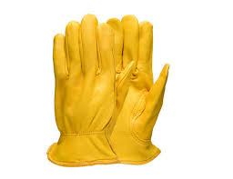

Eyewear Make sure it fully covers your eyes. You will be thankfull that you have them.

Leather Gloves There is always the changes of fire or burns. Good leather gloves or welding gloves can help prevent burns.
Hearing Protection Smacking metal and running power tools is loud and could damage your hearing.
Tools
Hammer You want a heavy hammer. The heavier the hammer the more the metal will move but the faster you will tire out. Some people like to also have a wooden Hammer. This is used to smooth out the metal.
Anvil Essentialy a large piece of metal to strike against. Some people use a block of steel, a railroad tie or even a rock.
Tongs You will need a way to reach into the forge and hold extremly hot pieces of metal safely. The metal will be between 1500 and 2000 degress fahrenheit.
Forge There are two main types of Forges. Coal and Propain. Coal is more primative and harder to control heatand see the metal.
Oil The type of oil is not overly important. It can be vegitable oil or motor oil. I do suggest motor oil. Motor oil is less likly to catch fire.
Files and Grinders These are used for the final shaping of the blade. You will also want sandpaper for the final finish.
High Carbon Steel You need a metal that will hold an edge for cutting. You can use car springs to railroad nails.
Quench Tank This will hold your oil for quenching. It nees to be large enough to hold oil and fully sumbmerge the Blade in.
Process
Start by designing the blade you want. Ask yourself what will you use this blade for. Draw a design. Figue out its size. Determine what metal you will use. Determine the order you will use to make the blade.
Forging
Bring the steel to heat using the forge. Use the hammer, tongs, and anvil to shape the blade. This will take many reheats in the forge. Don’t work the metal when it is cool
Normalizing
Once the Blade is close to the shape you want you to put it back in the forge to heat then let it slowly cool of. This lets the metal relax and realign. Do this a few times.
Quenching
Following the Normalizing, you need to harden the bade or Quench it. This is what allows the blade to retain a sharp edge. To do so you need to heat the blade to between 1500 and 1600 Fahrenheit. Some people use a magnet to check the temp because at the right temperature steel is no longer magnetic. Once it is at temp submerge the blade in the oil and move it around until it is cool.
Tempering
Quickly after Quenching the blade,
we need to soften it so it does not crack.
To do so put it in an oven at 400 degrees for two hours. You should do this two times. This keeps the blade hard but less lily to break
Sharpening
Now it is time to make it a usable tool by sharpening the blade. This can take some time but is what completes the process.
Safety
Forging is always dangerous. Always take precautions. Use the PPE and keep things safe. Safety is always the responsibility of the individual and you ned to watch waht the people around you are doing. Be aware of your surroundings.